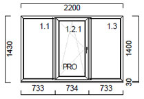

Plastikiniai langai ir durys Kaune | tikrilangai.lt
 LT 8-611-44557 Apie mus Naujienos Partneriai Kontaktai Akcijos
Langų sistemos
Schuco langai 3 kamerų 5 kamerų 6 kamerų Schuco Alu Inside Nordic Decco langai 70 82 Thermicco langai Thermicco 8 kamerosSchuco langai
Decco langai
Thermicco langai
Durų sistemos
Schuco durų sistemos 3 kameros 5 kameros Decco plastikinės lauko durys 6 kamerų Thermicco durys 8 kamerųSchuco durų sistemos
Decco plastikinės lauko durys
Thermicco durys
Aliuminio profiliai
SAPA 2050 SAPA 2074 SAPA 2086SAPA 2050
SAPA 2074
SAPA 2086
Paslaugos
Plastikinių langų montavimas Plastikinių langų reguliavimas Plastikinių langų remontasPlastikinių langų montavimas
Plastikinių langų reguliavimas
Plastikinių langų remontas
Naujausios langų, durų, aliuminio gaminių technologijos Naujausios langų, durų, aliuminio gaminių technologijos Naujausios langų, durų, aliuminio gaminių technologijos Naujausios langų, durų, aliuminio gaminių technologijos Naujausios langų, durų, aliuminio gaminių technologijos Naujausios langų, durų, aliuminio gaminių technologijos Naujausios langų, durų, aliuminio gaminių technologijos Naujausios langų, durų, aliuminio gaminių technologijos Naujausios langų, durų, aliuminio gaminių technologijos Naujausios langų, durų, aliuminio gaminių technologijos Naujausios langų, durų, aliuminio gaminių technologijos 12 Metų patirtis 70 Projektų per metus 35 Darbuotojai Keletas naujienų plastikinių langų gamybojeSiūlome šiltą montavimo būdą
2016. 01.02 Pristatome Jums naujieną - greenteQ Klima Konform sistemąGreenteQ Klima Konform sistema
2016. 09. 01Siūlome išorines aliuminio palanges!
Lango varčios apsauga nuo įsilaužimo SACH JAMMER
Sužinokite daugiauNaujiena Shuco langų sistemoms!
Sužinokite daugiau čia.Plastikiniai, bei aliuminiai langai ir durys
Kodėl verta rinktis būtent mūsų langus? Kuo jie išskirtiniai?Plastikiniai langai: patikima, patogu, ilgaamžiška
Plastiko profiliai yra dažniausiai naudojami langų gamyboje Lietuvoje. Plastikinių langų kainos ir kokybės santykis bei ypač geros šilumos sulaikymo savybės prisideda prie to, kad renkantis langus dažniausiai plastikas būna pirmoje vietoje. Be šių savybių plastikiniai langai pasižymi ir kitomis savybėmis, pavyzdžiui, patvarumu, saugumu, gera ne tik šilumos, bet ir garso izoliacija, puikiomis vėdinimo galimybėmis, plačiu stiklo paketų pasirinkimu. Taip pat klientų labai mėgstama savybė – lengva plastiko langų priežiūra ir valymas. Valymui rekomenduojame naudoti specialų PVC konstrukcijų priežiūros rinkinį: specialiu pieneliu langų rėmus nuvalysite itin greitai ir paprastai, tačiau, jei tokio rinkinio neturite, galite naudoti kitas priemones. Plastiko langų rėmus galima valyti priemonėmis, kurios yra pagamintos tensidų pagrindu, amoniako spiritu, vandeniu su muilu arba soda. Jei rėmai ištepti itin stipriai – statybinėmis medžiagomis, pavyzdžiui, gruntu, klijais, dažais arba laku – galima valyti cheminiais valikliais arba poliravimo priemonėmis, tačiau svarbu patikrinti, ar konkrečios priemonės tinka PVC gaminių priežiūrai ir valymui. Nesvarbu, ar langai plastikiniai, ar kitokie, jų negalima šveisti šiurkščiu šepečiu, taip pat naudoti priemonių, kurių sudėtyje yra abrazyvių arba agresyvių sudedamųjų dalių – skiediklių, tirpiklių, benzino. Be kita ko, šiandien itin moderni plastikinių langų gamyba leidžia džiaugtis itin dekoratyviais langais: yra galimybė rinktis iš plataus spalvų ir raštų asortimento. UAB „Tikri langai” langų pardavimo padaliniuose sužinosite visą specifinę informaciją apie konkrečią profilių sistemą. Jus aptarnaujantis specialistas mielai Jums patars, koks sprendimas geriausiai atitinka Jūsų poreikius, atsižvelgiant į plastikinių langų kainos ir kokybės santykį bei šilumos sulaikymo savybę.Plastikiniai langai, atrodantys kaip natūralus medis, išskirtinės dekoravimo plėvelės „Siena Noce“ ir „Siena Rosso“
UAB „Tikri langai” siūlo plastiko langus, savo išvaizda primenančius tikrą medieną. Labai sunku pastebėti, kuo šie langai skiriasi nuo įprastinių medinių langų. Natūralaus medžio imitacija ir plastikinių langų atveriamos galimybės – geresnį derinį sunku įsivaizduoti. Iš tikrųjų, langai plastikiniai, bet atrodo kaip natūralaus medžio. Naujos kartos paviršiaus danga suteikia būdingą nulakuoto akytojo medžio paviršiaus optiką.Dekoravimo plėvelė „Siena Rosso*" Dekoravimo plėvelė „Siena Noce*“ *Dėl spausdinimo technologijos čia pavaizduotos spalvos gali skirtis nuo originalo. Moderni plastikinių langų gamyba ir sudėtinga gamybos technologija leidžia sukurti plėvelę, kuri yra itin atspari blukimui, išsaugo spalvos blizgesį ir sukuria nepakartojamą gilumo įspūdį, suteikdama paviršiui tobulą natūralios, vertingos medienos efektą. Lyginant su kitomis medžio imitacijomis, smulki ir glotni plėvelės paviršiaus struktūra pasižymi ne tik klasikiniu grožiu, tačiau ją taip pat nepaprastai lengva valyti. Tačiau svarbu žinoti, kad plastikiniai langai, dengti dekoravimo plėvele, negali būti valomi naudojant priemones, kurių sudėtyje yra alkoholio, nitrolako, skiediklio, tirpiklio, pavyzdžiui, acetono, acetato, benzolo, chloro angliavandenių, minkštintojo ir t. t. Jūs galite rinktis iš dviejų paviršiaus dangų: „Siena Noce“ ir „Siena Rosso“. Jos suteikia paviršiui šlifuoto riešutmedžio išvaizdą ir kartu yra labai svarbios kuriant šiltą ir jaukią namų atmosferą. Apie plastikinių langų kainos pokyčius dėl dekoravimo plėvelės pasirinkimo teiraukitės UAB „Tikri langai“ specialisto.
Patikimi Vokietijos įmonės Gretsch – Unitas GmbH apkaustai
Šiuo metu UAB „Tikri langai” gaminami plastikiniai langai komplektuojami su ilgas apkaustų gamybos tradicijas turinčios Vokietijos įmonės Gretsch – Unitas GmbH apkaustais. Langais bus patogu naudotis tik tada, jei juos bus galima patogiai ir greitai varstyti, tačiau tai turi būti suderinta su sandariu lango uždarymu. Nesvarbu, ar langai plastikiniai, ar mediniai, ar aliuminiai – visi jie turi būti sandarūs: tiek dėl šilumos izoliacijos, tiek dėl saugumo. Standartinius apkaustus papildant įvairiais papildomais elementais, tokiais kaip priešįsilaužybinės fiksavimo galvutės ir fiksavimo galvutės atsakomosios, klaidingo rankenos pasukimo atidarant langą blokuotė, išlaužti iš lauko neleidžiančios rankenėlės ir nuo pragręžimo saugančios plokštelės, GU apkaustų sistema gali apsunkinti kelią patekti nepageidaujamiems svečiams į Jūsų namus. GU kompanija įkurta 1907 m. Štutgarte. Šiuo metu turi prekybines atstovybes daugiau kaip 40 pasaulio šalių, jose dirba per 3500 darbuotojų. Visą įmonės egzistavimo laikotarpį jos pastangos buvo nukreiptos tam, kad langų ir durų varstymas būtų tobulesnis, lengvesnis ir saugesnis. Daugelį produktų kompanija yra užpatentavusi.Stiklo paketai – daugiau šilumos ir šviesos Jūsų namams
Šiluma – vienas pagrindinių reikalavimų šiuolaikiniams langams. Todėl svarbu rinktis netik patikimą plastikinio lango rėmą, apkaustus, bet ir kokybiškus stiklo paketus. Geriausiai šilumą izoliuoja stiklo paketai, kuriuose naudojami selektyviniai stiklai. Stiklo paketo vidų pripildžius ne oru, o dujomis (argonu, kriptonu) šilumos izoliacinės savybės dar labiau pagerėja. Stiklo paketai plastikiniuose languose skirstomi į dviejų stiklų (vienos kameros) ir trijų stiklų (dviejų kamerų) stiklo paketus. Šiuo metu efektyviausi langai, kurie komplektuojami naudojant trijų stiklų paketą. Dvikamerinis stiklo paketas leidžia sumažinti U (šilumos perdavimo) reikšmę iki 0,5 W/m2K (stiklo paketo storis 48mm.), tačiau šiuo atveju žymiai padidėja stiklo paketo svoris. Tokiu atveju reikia atsižvelgti į varstomų lango dalių gabaritus, kad jos nebūtų per didelės ir netrukdytų kokybiškam plastikinio lango funkcionavimui. Rėmeliai tarp stiklų gali būti aliuminio arba plastikiniai. Geros kokybės plastikiniai rėmeliai, palyginus su tradiciniais aliuminio rėmeliais, sumažina terminį tiltą ant stiklo krašto ir padeda išvengti kondensato bei pelėsio susidarymo rizikos.Garantija ir ilgaamžiškumas
UAB „Tikri langai” langams suteikia iki 5 metų garantiją. Tačiau įsigijus langus svarbu nepamiršti, kad plastikinių langų ilgaamžiškumą ir sandarumą įtakoja ir pats vartotojas. Siekiantiems kuo ilgiau išsaugoti langų funkcionalumą svarbu prižiūrėti plastikinių langų konstrukciją. Tai atlikti gana paprasta turint PVC konstrukcijų priežiūros rinkinį. Į rinkinio sudėtį įeina visos reikalingiausios priemonės, skirtos plastikinių konstrukcijų priežiūrai: valomasis pienelis (skirtas plastikinių paviršių nešvarumams šalinti, po šios procedūros langai arba durys atrodys kaip nauji), tepalas apkaustams (apkaustų alyva – sumažina trintį ir nusidėvėjimą varstymo metu), servetėlės tarpinėms (servetėlės su silikonu – neleidžia tarpinėms kietėti ir skilinėti, taip užtikrinamas sandarumas bei tarpinių ilgaamžiškumas) ir šluostė. Šiltos, kokybiškos ir nebrangios durys Jūsų jaukiems namams! Plastikinės durys – populiarus pasirinkimas tiek vidaus, tiek lauko durims. Pirmiausia, jos praktiškos ir ilgaamžės, taip pat lengvai prižiūrimos, atsparios aplinkos poveikiui ir stilingos. Kaip UAB „Tikri langai“ gaminami plastikiniai langai Kaune, taip ir plastikinės durys – tik kokybiškos ir ilgaamžės, nes gamybai naudojamos tik patikimos ir laiko patikrintos medžiagos: Durų gamyboje naudojamas aukštos kokybės 3 arba 5 kamerų PVC profilis, pagamintas Vokietijoje; Naudojami 2 arba 3 stiklų stiklo paketai, užpildyti argono dujomis, užtikrinantys šilumą Jūsų namuose; Durys komplektuojamos su vienos, dviejų arba penkių fiksacijų spynomis, pagamintomis Vokietijoje; Stiklo paketai gali būti pagaminti iš skaidraus, matinio, veidrodinio, tonuoto arba įvairių raštų stiklo. Kalbant apie skirtingų tipų duris, plastikinės durys kaina net nesivaržo su medinėmis arba aliuminėmis durimis, nes yra pigesnės, tačiau pagal įvairias technines charakteristikas – stovi vienoje eilėje. Taigi, tai puikus pasirinkimas, atsižvelgiant į kainos ir kokybės santykį. Plastikinės durys yra lengvai pritaikomos prie bet kokio interjero ir eksterjero, nes gamyboje yra naudojami įvairūs laminatai: galimos įvairios medžio imitacijos arba vientisos spalvos, kurias galima rinktis iš daugiau kaip 20 atspalvių, taip pat plastikines duris galima nudažyti renkantis spalvą iš daugiau nei 200 galimų spalvų, taip pat jas galima dengti aliuminio dangteliais, o šie gali būti nudažyti įvairiomis spalvomis. Todėl UAB „Tikri langai“ Jums gali pasiūlyti plastikines duris, puikiai tinkančias Jūsų namams ir patenkinančias visus Jūsų poreikius. Aliuminio gaminių kokybė Aliuminiai profiliai vis dažniau keičia plastiko ir medžio konstrukcijas langų ir durų gamyboje: juos renkasi žmonės, namuose siekiantys maksimalaus tvirtumo arba norintys įgyvendinti neįprastus techninius-konstrukcinius sprendimus. Apskritai, aliuminio gaminiai pasižymi didesniu atsparumu temperatūrų svyravimams, mažesniu svoriu ir ilgaamžiškumu. Aliuminio profiliai skirstomi į šalto ir šilto aliuminio sistemas, o nuo to priklauso jų panaudojimo galimybės: šalto aliuminio sistemos naudojamos tik pastato viduje, o šilto – atskirti lauką ir vidų, pavyzdžiui, lauko durims, langams, fasadinėms sistemoms, balkonams ir pan. Aliuminio durys dažniausiai montuojamos lauke (lauko durys), aliuminis vidaus durų gamyboje naudojamas rečiau. Būtent lauko durims yra keliami tokie reikalavimai kaip patogumas, tvirtumas, ilgaamžiškumas, saugumas, funkcionalumas, lengva priežiūra ir pan., o visus šiuos reikalavimus pateisina aliuminio konstrukcija. Aliuminio langai pasižymi tokiomis pačiomis savybėmis kaip ir durys, tačiau, kalbant apie langus, svarbu, kad aplink langus nesikauptų kondensatas, drėgmė ir nekiltų pelėsio susidarymo rizika. Būtent tai priklauso nuo kokybiškos lango konstrukcijos. Be kita ko, aliuminis turi dar dvi itin svarbias savybes: aliuminis nesideformuoja, kadangi yra atsparus temperatūros pokyčiams, ir suteikia galimybę stiklinti didelio gabarito erdves, nes, pavyzdžiui, plastiko sistemos turi gaminio dydžio apribojimus. Todėl fasadinės sistemos, vitrinos, pertvaros yra gaminami iš aliuminio. Pavyzdžiui, didesnes (platesnes nei 1000 mm) lauko duris rekomenduojama gaminti tik iš aliuminio sistemos. Plastiko sistemos daugelio mėgstamos dėl plačių dizaino pasirinkimo galimybių: galimybės laminuoti, dažyti, padengti medžio imitacijos plėvelėmis ir pan., tačiau ne visi žino, kad aliuminis taip pat gali būti dažomi milteliniu būdu, anoduojami arba laminuojami pagal „Renolit“ spalvų gamą. Jei Jums reikalingos aliuminės durys arba langai Kaune arba kituose Lietuvos miestuose, jei domina aliuminių durų arba langų kaina, maloniai laukiame Jūsų UAB „Tikri langai“ pardavimo padaliniuose, kur, kvalifikuoto specialisto padedami, rasite optimaliausią sprendimą savo namams. Patarimai besirenkantiems langų ir durų sistemasLangų ir durų pasirinkimas – bene svarbiausias sprendimas namo statybos, renovacijos arba remonto darbų metu. Nuo tinkamo sprendimo priklauso garso ir šilumos izoliacinės savybės ir kitos techninės charakteristikos.
Pasirinktinai tiek langų sistemos , tiek durų sistemos gali būti plastiko arba aliuminio, tačiau, vis dėlto, populiariausias ir dažniausias pasirinkimas, kuris visiškai patenkina visus klientų poreikius, yra plastikiniai langai ir durys.
Ką reikia žinoti apie plastikinius langus ir duris? Plastikiniai langai yra nebrangūs, lengvai prižiūrimi ir ilgaamžiai. Jie atsparūs aplinkos poveikiui, pasižymi puikiomis techninėmis charakteristikomis, garso ir šilumos izoliacijos savybėmis. Todėl teigiama, kad plastikiniai langai kaina ir kokybe bei jų santykiu – itin geras pasirinkimas. Plastikinius langus lengva pritaikyti prie interjero arba eksterjero dizaino sprendimų. Juos galima laminuoti (galimos įvairios medžio imitacijos arba vientisos plastikinių langų spalvos, iš viso daugiau kaip 20 atspalvių), plastikinius langus galima dažyti daugiau nei 200 spalvų arba dengti aliuminio dangteliais, kurie taip pat gali būti dažomi įvairiausiomis spalvomis. Plastikinių langų vidų bei išorę galima laminuoti arba dažyti skirtingomis spalvomis. Plastikiniuose languose ir duryse sumontuota aukštos kokybės vokiška G. – U. furnitūra. Palyginus su kitų firmų furnitūra, G. – U. furnitūra turi tam tikras išskirtines savybes, todėl plastikinis langas turi net keletą atvertimo pozicijų. Stiklo paketų pasirinkimas yra labai didelis. Galima sukonstruoti paketus, tenkinančius beveik visus Jūsų reikalavimus. Populiariausi stiklo paketai yra iš dviejų skaidrių stiklų, kurių vienas yra padengtas selektyvine danga vidinėje stiklo pusėje. Selektyvinė danga – tai metalo dulkių danga, kuri atspindi pro stiklo paketą judančią šilumą (kaip veidrodis šviesą). Taigi, žiemą selektyvinė danga taupo šilumą, o vasarą ji apsaugo, kad į patalpas patektų mažiau saulės šilumos ir jos būtų vėsesnės. Paketų tarpai tarp stiklų dažniausiai užpildomi argono dujomis. Šios inertinės dujos izoliuoja šilumą geriau nei nejudantis oras. Vietoj argono gali būti naudojamos ksenono arba kriptono dujos, jų šilumos izoliavimo rodikliai dar geresni. Tačiau tokių stiklo paketų kaina yra didesnė, dėl to skiriasi ir plastikinių langų kaina. Hermetiškame stiklo pakete argono dujos išsilaiko 60 ir daugiau metų. Į stiklo paketus galima įdėti ir patobulintą selektyvinį stiklą „Ultra“, kuris, palyginus su įprastais selektyviniais stiklais, sulaiko iki 10 proc. daugiau šilumos. Stiklo paketai gali būti įvairaus storio, stiklų skaičiaus, atspalvio. Pastaruoju metu labai populiarėja stiklo paketai, kuriuose vietoj aliuminio rėmelio naudojami plastikiniai SwisspacerTM arba TGI rėmeliai. Jie neleidžia šilumai skverbtis laukan pro paketo kraštus, be to, mažina stiklo rasojimo tikimybę. Eksploatuojant plastikinius langus būtina suprasti, kad tai yra aukštos kokybės gaminys, kurio priežiūra nėra sudėtinga. Dažnai sumontuoti gaminiai būna sugadinami atliekant patalpų apdailos darbus: aptaškomi įvairiais skiediniais, subraižomi stiklo paketai ir gaminių rėmai, į furnitūros judančias dalis priberiama įvairių statybinių šiukšlių. Dėl to langai arba durys gali būti sugadinti arba deformuotis. Pasirūpinkite, kad patalpa apdailos metu (tinkuojant, betonuojant) ir kelis mėnesius po jos būtų pakankamai vėdinama, nes padidėjus drėgmei ant rėmo angokraščio gali atsirasti pelėsio. Apdailos darbo metu būtina apdengti gaminius plėvele, kartonu ar pan., kad tinkas, glaistas arba dažai nepatektų ant gaminio paviršiaus, stiklo, į spynas, vyrius ir kitas furnitūros dalis. Užklijuotą apsauginę plėvelę patartina laikyti ne ilgiau kaip 2 savaites. Subraižius stiklo paketą, profilio rėmą arba kitaip pažeidus PVC gaminį dėl netinkamo eksploatavimo, prašome kreiptis į UAB „Tikri langai“ arba UAB „Tikri langai" įgaliotus atstovus. Pribyrėjus į apkaustus įvairių dulkių ir šiukšlių, atsiradusių sienų tinkavimo, glaistymo, šlifavimo metu, apkaustai stringa, sunkiai veikia, kartais lūžta. Be to, blogai užsidarančios varčios gali iškrypti. Lango rasojimas yra vienas iš ženklų, kad temperatūros ir drėgmės santykis (mikroklimatas) Jūsų namuose yra netinkamas. Kondensatas, susidaręs ant langų arba durų, gali turėti įtakos pelėsiui ant rėmo angokraščio atsirasti. Atliekant patalpų apdailos arba remonto darbus būtina apsaugoti furnitūrą nuo šiukšlių, dulkių, klijų, dažų. Kitaip gali būti pažeista antikorozinė danga arba sulūžti furnitūra. Jeigu kuo nors uždengiate langus arba duris nuo pažeidimo statybų metu arba naudojate langines, būkite atsargūs, kad nepažeistumėte stiklo ir gaminio rėmo. Kad nelūžtų lango arba durų furnitūra, papildomai neapkraukite lango varčios, neremkite ir nekelkite jos papildomais daiktais. Nedėkite jokių papildomų daiktų tarp varčios ir staktos (nepriverkite laido, kabelio) – dėl to gali deformuotis lango arba durų rėmas, furnitūra. Žiemą reguliariai nuo lauko durų slenksčio valykite purvą, sniegą, ledo gabaliukus, smėlį ir pan.
Jei Jums reikalingos plastikinės durys arba plastikiniai langai Kaune arba kituose Lietuvos miestuose, jei domina plastikinių durų arba plastikinių langų kaina, maloniai laukiame Jūsų UAB „Tikri langai“ pardavimo padaliniuose, kur, kvalifikuoto specialisto padedami, rasite optimaliausią sprendimą savo namams.
Mūsų partneriai Produktai Langų sistemos Durų sistemos Aliuminio gaminiai Naudinga Kodėl verta rinktis būtent mus? Šiltos kokybiškos ir nebrangios durų sistemos Patarimai besirenkantiems langų ir durų sistemas RekvizitaiUAB "Tikri langai"
Įmonės kodas: 302679407
PVM mokėtojo kodas: LT100006478714
a.s. LT737290000008467585
Įmonės registravimo adresas:
Palemono g. 5, Kaunas
AB “Citadele” bankas Kauno filialas
Banko kodas 29000
© 2017 UAB Tikri langai. Plastikiniai, bei aliuminiai langai ir durys. Visos teisės saugomos Duomenų apsauga Sprendimas: TEXUSMūsų svetainė naudoja slapukus (angl. cookies). Šie slapukai naudojami statistikos ir rinkodaros tikslais.
Jei Jūs sutinkate, kad šiems tikslams būtų naudojami slapukai, spauskite „Sutinku“ ir toliau naudokitės svetaine.
Kad veiktų užklausos forma, naudojame sistemą „Google ReCaptcha“, kuri padeda atskirti jus nuo interneto robotų, kurie siunčia brukalus (angl. spam) ir panašaus tipo informaciją.
Taigi, kad šios užklausos forma užtikrintai veiktų, jūs turite pažymėti „Sutinku su našumo slapukais“.
Slapukų naudojimo parinktys
Jūs galite pasirinkti, kuriuos slapukus leidžiate naudoti.
Plačiau apie slapukų ir privatumo politiką .
Funkciniai slapukai (būtini)
Šie slapukai yra būtini, kad veiktų svetainė, ir negali būti išjungti. Šie slapukai nesaugo jokių duomenų, pagal kuriuos būtų galima jus asmeniškai atpažinti, ir yra ištrinami išėjus iš svetainės.
Našumo slapukai
Šie slapukai leidžia apskaičiuoti, kaip dažnai lankomasi svetainėje, ir nustatyti duomenų srauto šaltinius – tik turėdami tokią informaciją galėsime patobulinti svetainės veikimą. Jie padeda mums atskirti, kurie puslapiai yra populiariausi, ir matyti, kaip vartotojai naudojasi svetaine. Tam mes naudojamės „Google Analytics“ statistikos sistema. Surinktos informacijos neplatiname. Surinkta informacija yra visiškai anonimiška ir tiesiogiai jūsų neidentifikuoja.
Reklaminiai slapukai
Šie slapukai yra naudojami trečiųjų šalių, kad būtų galima pateikti reklamą, atitinkančią jūsų poreikius. Mes naudojame slapukus, kurie padeda rinkti informaciją apie jūsų veiksmus internete ir leidžia sužinoti, kuo jūs domitės, taigi galime pateikti tik Jus dominančią reklamą. Jeigu nesutinkate, kad jums rodytume reklamą, palikite šį langelį nepažymėtą.
Sutinku Nesutinku Sutinku Parinktys